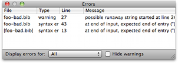

Getting More Help Getting More Help
Getting More Help Getting More HelpThe Error panel provides feedback on errors contained in a bib file. You can always show the panel by selecting "Show/Hide Error Panel" from the Window menu (⇧⌘E ). This is what the errors panel looks like:
Clicking on a warning line in this table opens an editing window with the offending line highlighted.

If your questions aren't answered in this help file, the bibdesk-users mailing list may have an answer. Your question may have been answered already, so you can check the list archives to get instant gratification.
You can submit a bug report to the bug tracker at http://sourceforge.net/projects/bibdesk/.
The reports are most useful if they provide a clear description of what went wrong, what you expected, and how to reproduce the problem at a different computer without you there helping us.
If you're submitting a problem with how it handled a certain file, it would help if you sent that file too, or at least the representative subset that causes the errors. Crash reports are also useful and can be obtained from the Console application (in `Applications/Utilities`).